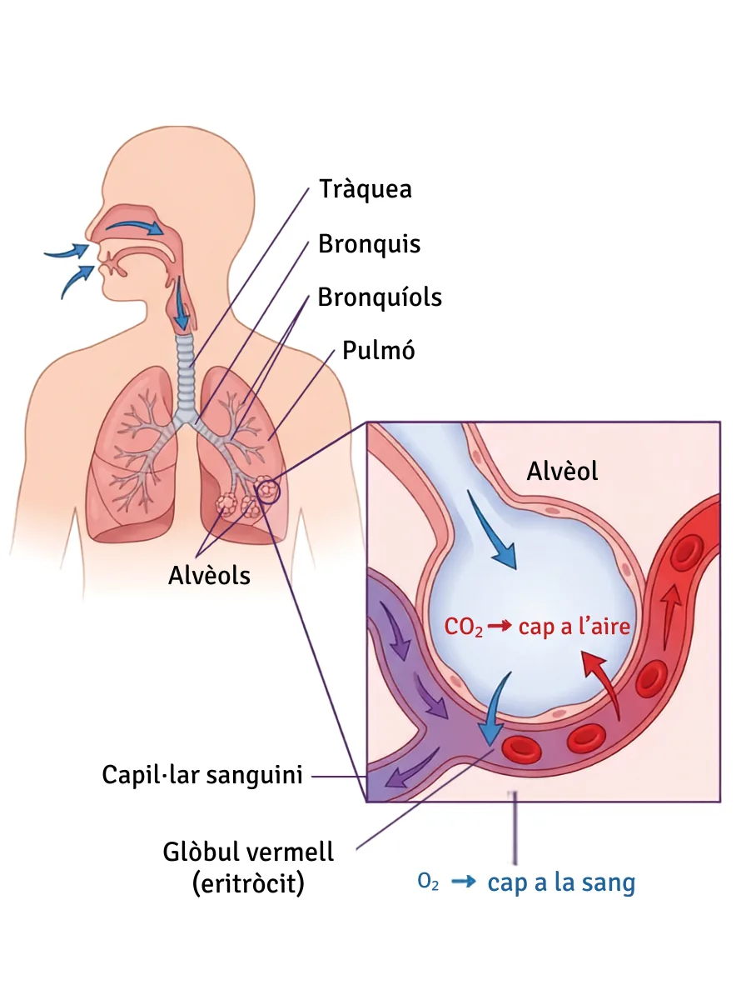

Laboratori virtual. Avui resols els dos enigmes de la paret, i les dades les poses tu.
La meva FC en repòs, ara mateix, crec que és de bat/min.
La FC màxima que crec que puc assolir és de bat/min.
Després de l'exercici, crec que trigaré minuts a tornar al repòs.
Després de l'experiment tornaràs aquí a comprovar si ho havies encertat (ho veuràs al final).
Comprova que ho tens clar:
Fi dels 15 segons.
bat/min
Al mode virtual, la taula s'omple quan desis cada mesura.
| Moment | Temps | La teva FC (bat/min) | FC company/a (bat/min) | Diferència (la teva − la seva) |
|---|
Quan corres, les cèl·lules dels músculs gasten molt ATP. Per fabricar-lo necessiten més glucosa i més O₂ (recorda la respiració cel·lular: glucosa + O₂ → CO₂ + H₂O + ATP, dins el mitocondri). El cos ho resol de diverses maneres alhora: respires més fort (entra més O₂ als alvèols), la sang es redirigeix cap als músculs que treballen i, sobretot, circula més de pressa.
Però qui li ordena, al cor, que s'acceleri? Tu no hi penses: passa sol. El cervell detecta l'esforç i activa el sistema nerviós simpàtic, que arriba al cor per un nervi i allibera adrenalina a la sang. Aquests dos senyals fan que el marcapassos del cor dispari més sovint. Per això la FC puja en segons, abans que al múscul li falti gens d'O₂ — i per això costa més fer-la baixar que fer-la pujar (ho veuràs a l'apartat 3).
220 − = bat/min (FCmàx estimada)
0,85 × FCmàx = bat/min (llindar anaeròbic, 85 % FCmàx)
Durant l'exercici: — bat/min. Zona:
Escala de zones de FC (% de la teva FCmàx):
La barra va de 0 % a 100 % (= la teva FCmàx).
Fins al 85 % de la teva FCmàx ets a la zona aeròbica: arriba prou O₂ i els músculs cremen glucosa i greixos. Per sobre del 85 % entres a la zona anaeròbica: l'O₂ no arriba prou de pressa, el múscul crema glucosa sense O₂ i es produeix lactat i acidesa, que et fan cremar el múscul i t'obliguen a abaixar el ritme. Per això ningú pot mantenir gaire estona un esforç per damunt del llindar.
La sang no fabrica l'O₂: el recull. Ho fa als alvèols, on la paret és tan prima que l'O₂ hi passa a la sang i el CO₂ fa el camí contrari. Per això l'esforç accelera dos sistemes alhora, el cor i la respiració.

Figura. El camí de l'aire fins als alvèols i l'intercanvi de gasos amb la sang dels capil·lars.
Creus que les nostres dades es podrien publicar en una revista científica? Marca els problemes que hi veus i explica el que et sembla més greu:
Pista de nivell C: prova amb mínim 40, màxim 220 i cada 20.
Toca o clica a la gràfica, a sobre de cada columna, a l'alçada de la FC. També pots triar la columna aquí sota i escriure'n el valor.
bat/min
G1 · FC de la Mercè durant una cursa de 10 km. Dades recreades amb finalitat didàctica. La Mercè té 14 anys: FCmàx = 206 → llindar anaeròbic (85 %) = 175 bat/min.
① En quin minut assoleix la FC màxima i quin valor té? Què estava fent en aquell moment?
② Creua la meta al minut 55. A partir de quin minut la seva FC torna a estar per sota de 80 bat/min? Quanta estona ha trigat, doncs, a recuperar-se?
④ Què és més ràpid?
G2 · Dues persones de 20 anys fan exactament el mateix exercici. Mateixa intensitat i mateixa estona (5 min) · FCmàx de tots dos = 200 → llindar = 170 bat/min.
Entrenar fa el ventricle esquerre més gran i més fort. Per això, amb un sol batec, un cor entrenat expulsa molta més sang que un cor sedentari. Si cada batec ret més, en calen menys per moure la mateixa sang: la FC en repòs baixa, i en acabar l'esforç el cor neteja abans el CO₂ i el lactat dels músculs.
① Qui arriba abans al seu punt més alt, i qui és l'únic que supera el llindar dels 170? Digues en quin minut passa cada cosa.
③ Quin dels dos perfils s'assembla més a la teva gràfica de l'apartat 2? Formula una hipòtesi de per quina raó.
La sang que el cor mou cada minut és la despesa cardíaca: Q = volum de cada batec × FC. Calcula Q en L/min (1 L = 1000 mL):
| Volum/batec | FC | Q (L/min) | |
|---|---|---|---|
| Sedentari, repòs | 70 mL | 78 | |
| Sedentari, esforç màxim | 100 mL | 182 | |
| Esportista, repòs | 110 mL | 45 | |
| Esportista, esforç màxim | 170 mL | 150 |
Just en llevar-te (abans d'esmorzar i sense moure't gaire), mesura la FC en repòs: compta els batecs durant 30 segons i multiplica × 2 (a casa comptem el doble d'estona que a classe perquè, en repòs, com més estona comptes més fiable surt la mesura). Apunta-ho aquí:
| Matí | Data | Hora de llevar-te | FC en repòs (bat/min) | Notes |
|---|
Porta la fitxa a la Sessió 6. Posarem en comú les dades de tota la classe. Les pulsacions són teves.
Aquí tens les teves dades i respostes agrupades per apartat de la fitxa. Copia-les i passa-les a la fitxa impresa.